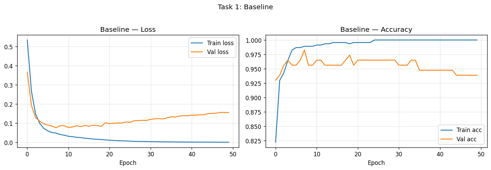
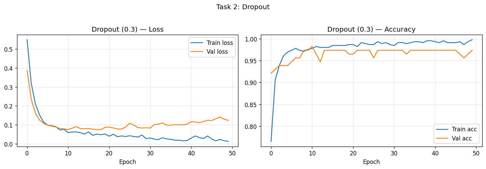
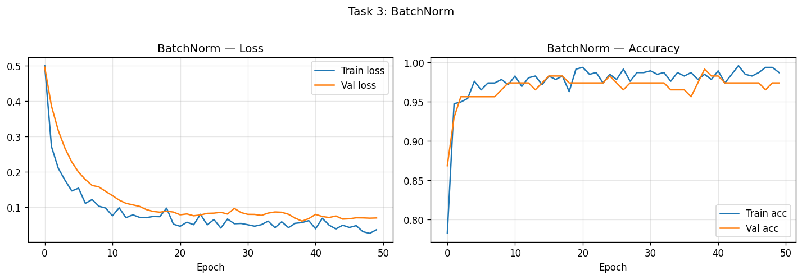
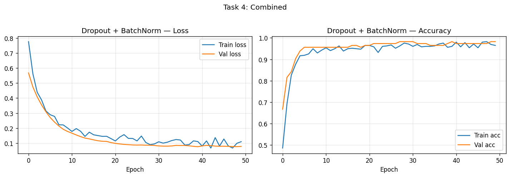
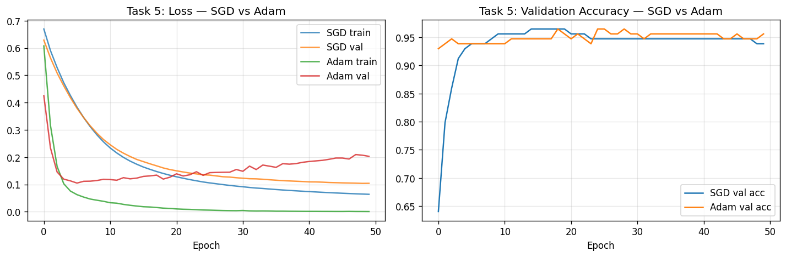
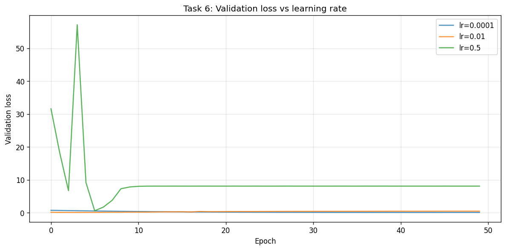

Academic integrity: This report and the conclusion are written in my own words. I have not copied from colleagues or submitted anyone else's work. Plagiarism, copy-pasting, or submitting a colleague's report results in zero marks for all involved (as per course policy).
To build deep neural networks with TensorFlow on the Breast Cancer dataset; to implement and compare Dropout, Batch Normalization, and their combination; to compare SGD and Adam optimizers; and to observe learning rate sensitivity (instability or divergence). Validation curves are used to diagnose overfitting and analyze training stability.
StandardScaler.All code is in lab5_tasks.py. Run from project root: ./venv/bin/python3 "Lab 5/Ali Hamza's Lab/lab5_tasks.py" or from this folder: ../../venv/bin/python3 lab5_tasks.py
As required by the manual: build a deep network without Dropout or BatchNorm, train for 50 epochs, and plot training loss, validation loss, and accuracy. Results are recorded in the Comparison Table and below.
def build_baseline(input_dim=INPUT_DIM):
return keras.Sequential([
layers.Input(shape=(input_dim,)),
layers.Dense(64, activation="relu"),
layers.Dense(64, activation="relu"),
layers.Dense(32, activation="relu"),
layers.Dense(1, activation="sigmoid"),
], name="baseline")The baseline shows a gap between training and validation loss (overfitting): training loss keeps decreasing while validation loss can flatten or increase.
Figure 1.1: Task 1 – Training loss, validation loss, and accuracy (as per Lab 05 requirements).

As required: modify the model by adding Dropout (rate 0.3 after each hidden layer), train again, and compare overfitting behavior and accuracy with the baseline.
layers.Dense(64, activation="relu"),
layers.Dropout(rate),
layers.Dense(64, activation="relu"),
layers.Dropout(rate),
...Figure 2.1: Task 2 – Dropout (loss and accuracy).

As required: add BatchNorm to the model (after each Dense, before ReLU). Train and compare convergence speed, stability, and final performance.
layers.Dense(64),
layers.BatchNormalization(),
layers.Activation("relu"),
...Figure 3.1: Task 3 – BatchNorm (loss and accuracy).

As required: combine Dropout and BatchNorm in the same model, train, and analyze.
layers.Dense(64),
layers.BatchNormalization(),
layers.Activation("relu"),
layers.Dropout(rate),
...BatchNorm stabilizes layer inputs; Dropout regularizes. The combined model gives the best validation accuracy in our run (see Comparison Table), with stable and smooth loss curves.
Figure 4.1: Task 4 – Dropout + BatchNorm (loss and accuracy).

As required: train the same architecture with SGD and Adam, plot loss curves on the same graph, and compare speed, smoothness, and final performance.
optimizer=keras.optimizers.SGD(learning_rate=0.01) # or Adam(0.001)Figure 5.1: Task 5 – Loss curves on same graph (SGD vs Adam).

As required: try lr = 0.0001, lr = 0.01, and lr = 0.5 (Adam), and observe instability or divergence.
Figure 6.1: Task 6 – Learning rate sensitivity (validation loss for lr = 0.0001, 0.01, 0.5).

| Model | Val Loss | Val Acc |
|---|---|---|
| Baseline | 0.1553 | 0.9386 |
| Dropout | 0.1240 | 0.9737 |
| BatchNorm | 0.0694 | 0.9737 |
| Dropout+BatchNorm | 0.0774 | 0.9825 |
| SGD (lr=0.01) | 0.1040 | 0.9386 |
| Adam (lr=0.001) | 0.2028 | 0.9561 |
Generated with 50 epochs per model.
As per Lab 05 submission requirements, all loss plots are included above. Figures are embedded in each task section.
| Task | Description | Plot |
|---|---|---|
| Task 1 | Baseline: training loss, validation loss, accuracy | task1_baseline.png |
| Task 2 | Dropout: loss and accuracy | task2_dropout.png |
| Task 3 | BatchNorm: loss and accuracy | task3_batchnorm.png |
| Task 4 | Dropout + BatchNorm: loss and accuracy | task4_combined.png |
| Task 5 | Optimizer comparison: SGD vs Adam | task5_optimizer_comparison.png |
| Task 6 | Learning rate sensitivity: lr = 0.0001, 0.01, 0.5 | task6_learning_rate_sensitivity.png |
Overfitting: The baseline deep MLP tends to overfit (training loss keeps decreasing while validation loss flattens or increases). Dropout reduces this gap by randomly disabling neurons so the network cannot rely on a fixed set of features. BatchNorm stabilizes layer inputs and often speeds convergence; it also adds slight noise per mini-batch, which can have a mild regularizing effect. Combining both usually gives stable training and good generalization.
Optimizers: Adam adapts per-parameter step sizes and typically converges faster and more smoothly than SGD on this setup. SGD can reach similar accuracy with a tuned learning rate but often needs more epochs and may show more oscillation.
Learning rate: Too small (e.g. 0.0001) slows convergence; too large (e.g. 0.5) leads to instability or divergence. A moderate value (e.g. 0.001 for Adam) works well for this dataset and architecture.
In this lab we built deep MLPs on the Breast Cancer dataset and compared regularization and optimization choices. The baseline showed typical overfitting; adding Dropout improved generalization and reduced the train–val gap; BatchNorm improved convergence speed and stability; and combining both gave a good balance. Comparing SGD and Adam showed that Adam converges faster and more smoothly for the same architecture. Varying the learning rate showed that too small a value slows learning and too large a value causes instability, reinforcing the need for a reasonable learning rate when training neural networks.
{kind=link}
{kind=link}
{kind=link}
{kind=link}
{kind=link}
{kind=link}